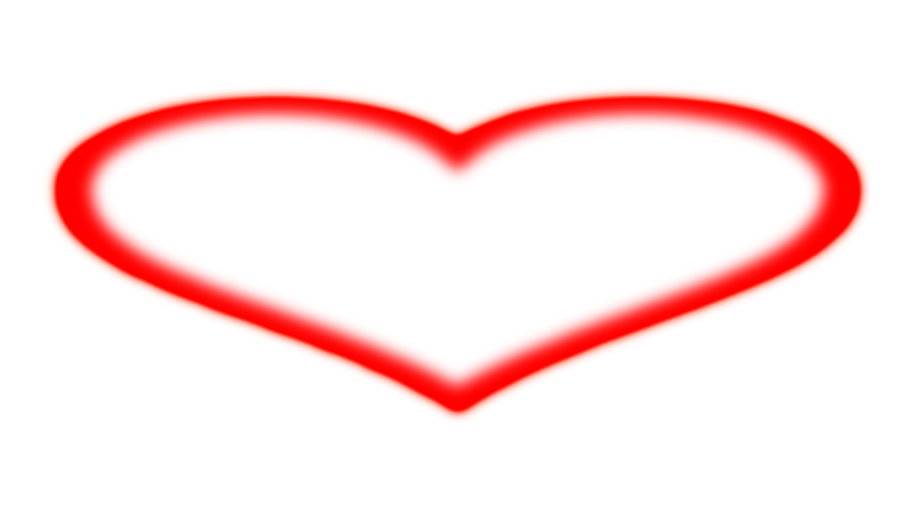

Ale przecież moje ciało nie jest tylko moje. Tak jak każde inne, składa się z atomów z odzysku i pamięta lęki i pragnienia tak dawne, że nie pozostał już po nich żaden inny ślad. To co miliardy lat temu było wolnymi prokariontami, dziś tworzy mnie i Ciebie i tak wiele struktur, które znajdują się na odcinku pomiędzy nami. Nie pochodzimy z równej linii przodków, wpisanej w rodzinne drzewa i krzewy. Nasze ciała są naszymi własnymi przodkami. Nasze ciała są częścią sieci tak ciasnej, że aż niezauważalnej. Może dlatego im bardziej próbuję być sobą tym bardziej staję się kimś innym.